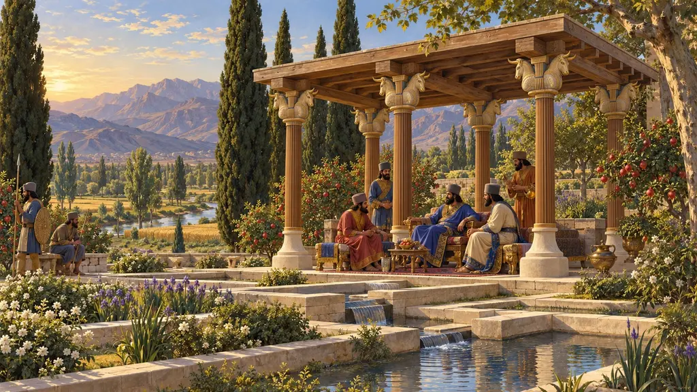
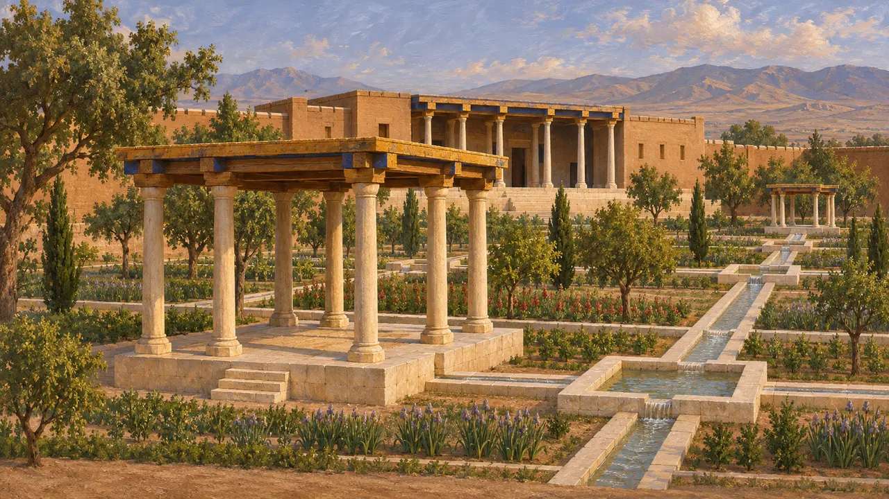
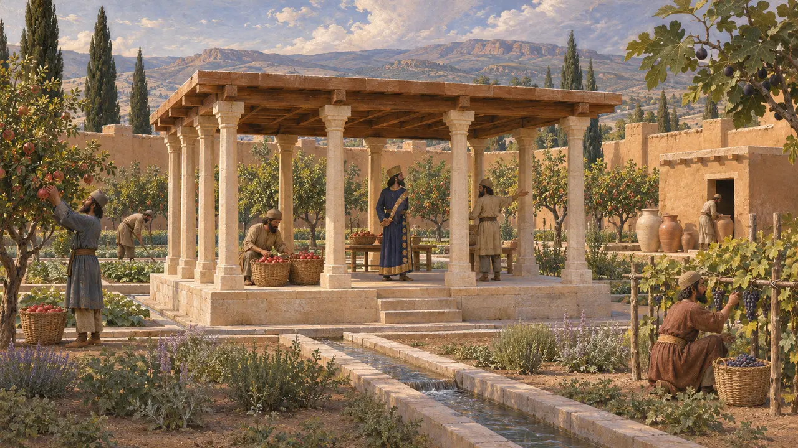
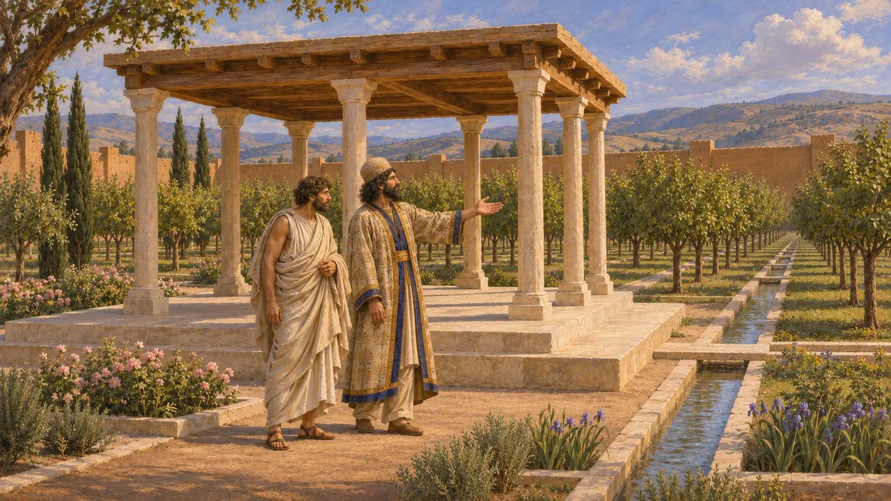
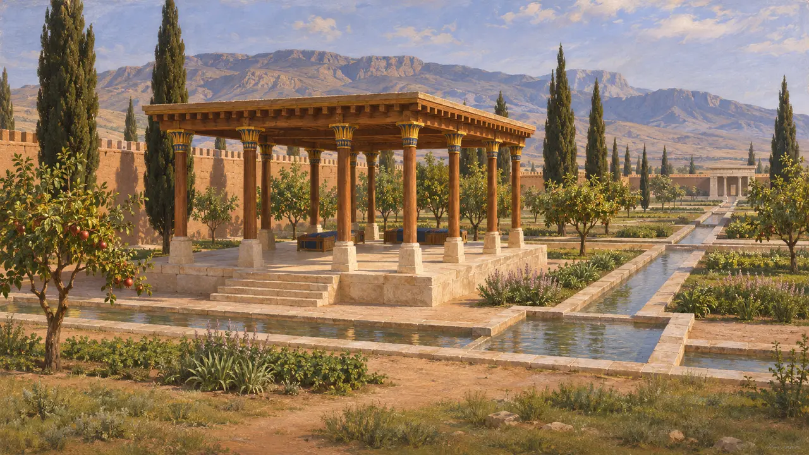

Gartenpavillon
Säulenunterstand in einem ummauerten königlichen Garten, Pasargadae, 6. Jahrhundert v. Chr.
Persische Könige und Adlige legten ummauerte Gärten mit Baumreihen, steinernen Wasserkanälen und kleinen Säulenbauten als Schattenspender an, die die Griechen später Paradiese nannten. In Pasargadae besaß der Garten des Kyros zwei solcher Pavillons. Sie zeigen, wie der Hof Gärten nutzte, um Ordnung, Überfluss und die königliche Fürsorge für das Land zur Schau zu stellen.
Im Spiel: Ein Versorgungsgebäude in Pasargadae, Parsa und Susa: ein von fließendem Wasser gekühltes Schattenhaus mit Säulen, dessen Gastgeber die Häuser einladen, an denen sie vorbeikommen. Sein Festmahl erinnert an Herodots Erzählung, wie Kyros die Perser auf einer Wiese bewirtete, nicht in einem Pavillon.

Die Pavillons von Pasargadae
Zeitgenössisch belegtDavid Stronachs Ausgrabungen Anfang der 1960er-Jahre legten einen Garten vor dem Wohngebäude frei, das als Palast P bekannt ist. An seinen Ecken standen zwei kleine Säulenbauten, Pavillon A und Pavillon B genannt. Kalksteinrinnen mit quadratischen Becken in regelmäßigen Abständen führten Wasser durch den Garten; Teile davon sind bis heute erhalten.
D. Stronach, Pasargadae, 1978

Was ein Paradeisos war
Zeitgenössisch belegtDas griechische paradeisos geht auf ein altpersisches Wort zurück, rekonstruiert als paridaida, das einen umfriedeten Park oder ummauerten Garten bezeichnet. Elamische Verwaltungstafeln aus Persepolis verwenden einen verwandten Begriff, partetaš, für bewirtschaftete Güter mit Bäumen, Obst und Vorräten. Diese Texte zeigen, dass solche Gärten von Beamten geführte Wirtschaftsbetriebe waren und nicht nur Orte der Muße.
Persepolis Fortification tablets; W. Henkelman, The Other Gods Who Are, 2008; P. Briant, From Cyrus to Alexander, 2002

Ein persischer Prinz zeigt seinen Garten
Antiker BerichtXenophon erzählt, wie der Spartaner Lysander den jüngeren Kyros in seinem Paradies in Sardes besuchte und die geraden Baumreihen bewunderte. Kyros sagte, er habe den Garten geplant und einige Bäume selbst gepflanzt. Die Szene spielt um 407, lange nach der Epoche des Spiels, zeigt aber, dass die Griechen das Gärtnern als königliche Kunst ansahen.
Xenophon, Oeconomicus 4.20-25

Wie der Garten angelegt wurde
UmstrittenStronach vertrat die Ansicht, dass die Kanäle den Garten von Pasargadae in vier Teile gliederten, eine frühe Form des späteren persischen Vierergartens. Spätere geophysikalische Untersuchungen rund um die Stätte fanden weitere Kanäle und Gebäude, und manche Forscher bezweifeln heute den sauberen vierteiligen Plan. Ob fließendes Wasser die Pavillons kühlte, wie das Spiel annimmt, ist eine vernünftige Vermutung, aber keine erwiesene Tatsache.
D. Stronach, Pasargadae, 1978; C. Benech, R. Boucharlat and S. Gondet, Arta 2012.003
Das Festmahl des Kyros auf der Wiese
Spätere LegendeHerodot berichtet, Kyros habe die Perser einen Tag lang dorniges Land roden lassen und sie am nächsten Tag auf einer Wiese bewirtet. Er fragte sie, welcher Tag ihnen lieber sei, und erklärte ihnen, die Freiheit von den Medern werde ihnen ein Leben der zweiten Art bringen. Die Geschichte ist eine Lehrerzählung und beschreibt keinen Gartenpavillon.
Herodotus 1.126
Quellen
- D. Stronach, Pasargadae, 1978
- C. Benech, R. Boucharlat and S. Gondet, Arta 2012.003
- Herodotus 1.126
- Xenophon, Oeconomicus 4.20-25
- P. Briant, From Cyrus to Alexander, 2002
- W. Henkelman, The Other Gods Who Are, 2008